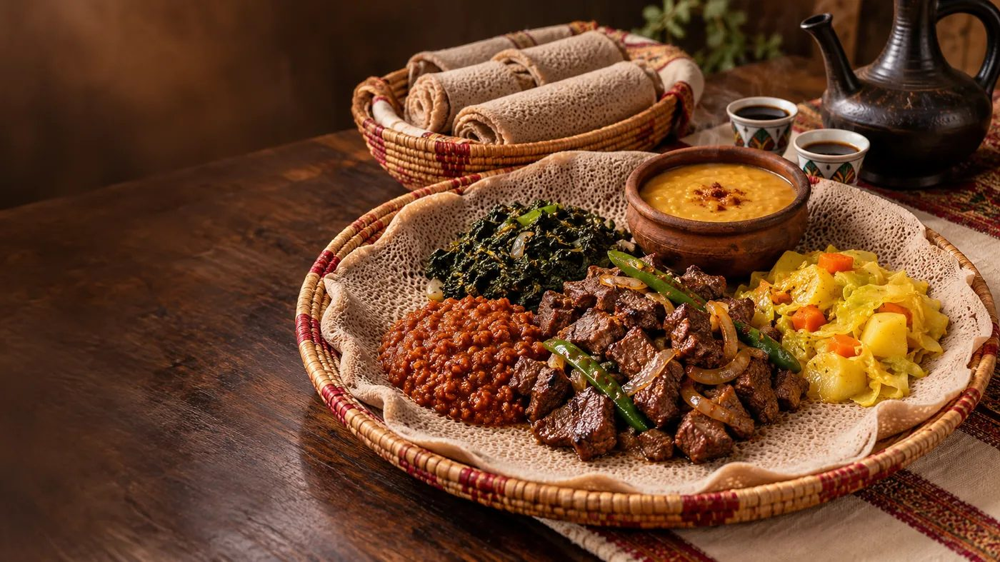
Our Menu
Ethiopian & Eritrean Food & Coffee Menu
Ethiopian and Eritrean breakfast favourites, hearty lunch and dinner plates, and cold drinks at Rehoboth Cafe, 2737 Danforth Ave, Toronto.
Breakfast ቁርስ
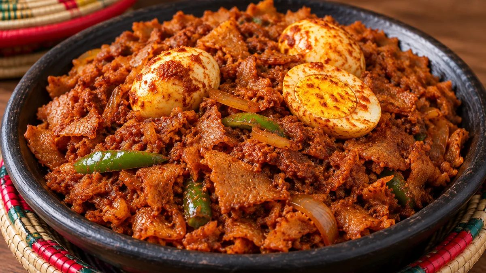
-
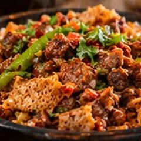
Tibs Firfir ጥብስ ፍርፍር
$17.99A delightful combination of tender tibs meat and firfir, creating a savoury and satisfying meal.
-
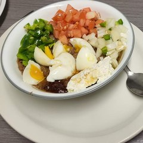
Ful ፉል
$14.99A savoury and filling dish made from fava beans, seasoned with spices, and often garnished with fresh vegetables and egg (boiled or scrambled) and some kibe, olive oil or sesame oil.
-
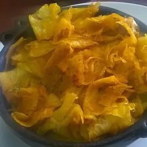
Chechebsa ጨጨብሳ
$15.99Small, bite-sized pieces of flatbread sautéed with spices and butter or oil. Made with whole wheat or white wheat, prepared with olive oil or kibe (clarified butter). Also available made with gluten-free teff.
- Gluten-free option
-
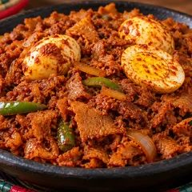
Firfir ፍርፍር
$15.99A spicy and tangy dish made from shredded injera (Ethiopian and Eritrean flatbread) mixed with a rich berbere sauce.
- Popular
-
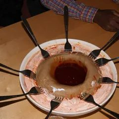
Genfo ገንፎ
$17.99A hearty and nutritious porridge for a comforting start to your day. Made with whole wheat or white wheat, prepared with olive oil or kibe (clarified butter).
- Popular
-
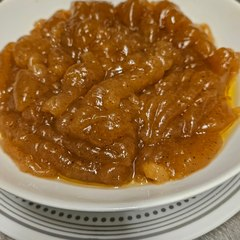
Bula ቡላ
$16.99A traditional Ethiopian breakfast made from the starch of the enset plant, with a unique and wholesome flavour.
-
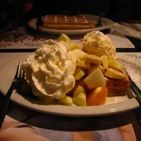
Waffle ዋፍል
$9.99Crisp, golden waffles with your choice of toppings: mango, banana or blueberry.
Lunch & Dinner ምሳ እና እራት
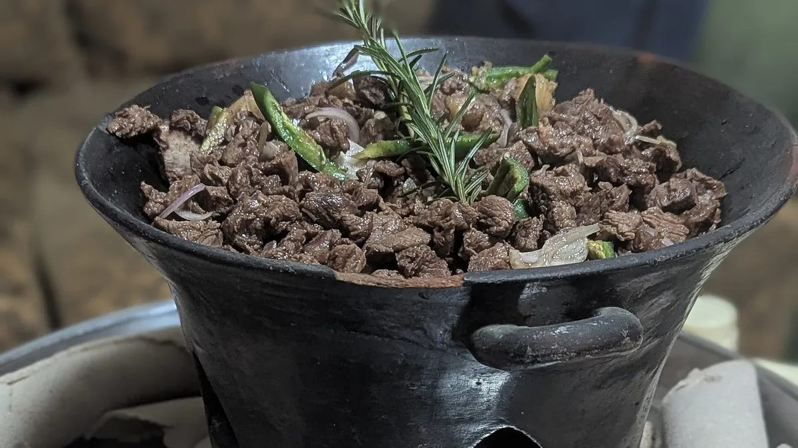
-
Shiro ሽሮ
$16.99A rich and creamy chickpea stew, slow-cooked with a blend of spices. Often enjoyed with injera.
- Popular
- Vegetarian
-
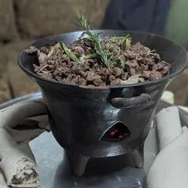
Tibs ጥብስ
$23.49A traditional Ethiopian and Eritrean stir-fry of tender beef, lamb or goat, sautéed with onions, peppers and an aromatic blend of spices. Served with injera.
-
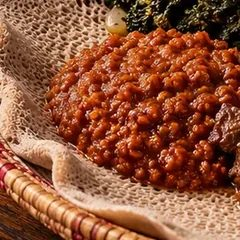
Misir Wot / Adess ምስር ወጥ
$16.99A hearty lentil stew slow-cooked with a blend of spices and herbs. Served with injera.
- Vegetarian
-
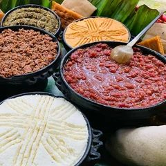
Kitfo ክትፎ
$24.99Finely minced raw beef seasoned with mitmita (a spicy chili powder) and niter kibbeh (clarified butter). Served with injera or kocho.
- Popular
-
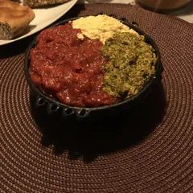
Special Kitfo ልዩ ክትፎ
$27.99Kitfo mixed with ayib (cottage cheese) and gomen (kale).
-
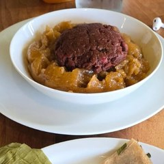
Bula Kitfo ቡላ ክትፎ
$27.99An enhanced version of the classic kitfo, served with bula for an extra layer of flavour and texture.
-
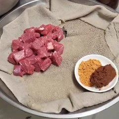
Tira Sega ጥሬ ሥጋ
$22.00Raw beef pieces served with injera, mitmita and awaze.
-
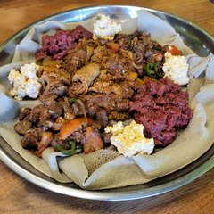
Rehoboth Special (Meal for 3)
$59.99A meal for three, including tibs, firfir and kitfo. A delightful and diverse tasting experience for sharing.
- For sharing
Drinks መጠጦች
Hot drinks ትኩስ መጠጦች
-
Cappuccino ካፑቺኖ
$3.99Rich espresso with steamed milk and a creamy cap of foam.
-
Macchiato ማኪያቶ
$3.49Espresso topped with a small dollop of steamed milk foam.
-
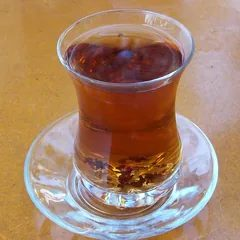
Tea ሻይ
$2.49Classic hot tea, gently steeped for an aromatic cup.
-
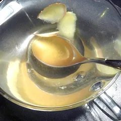
Organic Ginger Tea ዝንጅብል ሻይ
$5.99A soothing, aromatic tea made from organic ginger, perfect for relaxation.
Cold drinks ቀዝቃዛ መጠጦች
-
Ginger Ale
$1.99Crisp, carbonated soft drink with a smooth ginger flavour.
-
Coke
$1.99 -
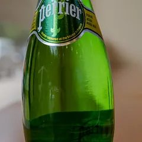
Perrier
$2.99 -
Crush
$1.99 -
Water ውሃ
$1.99
Ask our team about other coffee drinks served in the cafe.
No dishes match your search. Try another word, or .
More from our kitchen
Photos from Rehoboth Cafe. Ask our team about this beef dish and today’s availability.

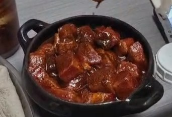
Photo credits
- “Kitfo (ክትፎ)” by Vipon8, Wikimedia Commons, CC0 1.0. Cropped and resized.
- “Kitfo, gomen and aybe” by Arsupeee, Wikimedia Commons, CC BY-SA 4.0. Cropped.
- “Siga Tibs” by Khajitdadddy, Wikimedia Commons, CC BY-SA 4.0. Cropped.
- “Chipchipsa Ethiopian dish 2014” by Neftalem, Wikimedia Commons, CC BY-SA 4.0. Cropped.
- “Ga'at food” by Stefan Alfons Tzeggai, Wikimedia Commons, CC BY-SA 3.0. Cropped.
- Firfir: illustration supplied for this website.
- “Belgian waffle with fruitsalad and cream” by Prashanthns, Wikimedia Commons, CC BY-SA 3.0. Cropped.
- Tira Sega and beef in red sauce: photographs supplied by Rehoboth Cafe, October 2026. Cropped and resized.
- Bula, Bula Kitfo and Rehoboth Special: photographs supplied by Rehoboth Cafe, October 2026. Cropped and resized.
- “PERRIER (10)” by Dinkun Chen, Wikimedia Commons, CC BY-SA 4.0. Cropped.
- “Ginger ale” by Hisakazu Watanabe, Wikimedia Commons, CC BY-SA 2.0. Cropped.
- Public domain / CC0: “Coca-Cola glass bottle” by Ralf Roletschek, “Glass of water outside” by Kurt Kaiser (all Wikimedia Commons).
- Tibs Firfir photo is a design placeholder until Rehoboth Cafe supplies its own.
- Ful: photograph supplied by Rehoboth Cafe, October 2026. Cropped and resized.
- Ethiopian platter (top banner, and the Misir Wot photo cropped from it): image supplied for this website.
- Shiro: illustration supplied for this website.
- “Botella Orange Crush Mexico” by Alextvmx, Wikimedia Commons, CC BY-SA 4.0. Cropped.
- Macchiato: “Caffe macchiato” by Mulo Emmanuel, Wikimedia Commons, CC BY-SA 3.0. Cropped.
- Tea: “Azerbaijanian cup of tea” by Shuhrataxmedov, Wikimedia Commons, CC BY-SA 3.0. Cropped.
- Ginger tea: “Tea P1000274a” by E.mil.mil, Wikimedia Commons, CC BY-SA 4.0. Cropped.
- Coffee pour (Drinks banner): design placeholder until Rehoboth Cafe supplies its own photo.
Visit us on Danforth
2737 Danforth Ave, Toronto, ON M4C 1L8 · (416) 686-1104Monday–Saturday 9 a.m.–8 p.m. · Sunday 10 a.m.–7 p.m. · Dine in or take out
Get Directions → (opens Google Maps in a new tab)